Menata Harapan
untuk Segara Anakan
Memantau, melestarikan, dan mengedukasi demi keberlanjutan lingkungan.
Memantau, melestarikan, dan mengedukasi demi keberlanjutan lingkungan.
Saat ini, Laguna Segara Anakan menghadapi penyusutan wilayah perairan akibat sedimentasi yang terus berlangsung. Sedimentasi merupakan proses alami yang berperan dalam pembentukan daratan dan habitat di kawasan pesisir. Namun, akumulasi yang berlebihan dapat menyebabkan pendangkalan dan penyusutan perairan serta menekan ekosistem mangrove. Kondisi ini menjadikan pemantauan perairan penting untuk memahami perubuhan lingkungan dan mendukung keberlanjutan ekosistem serta masyarakat pesisir.
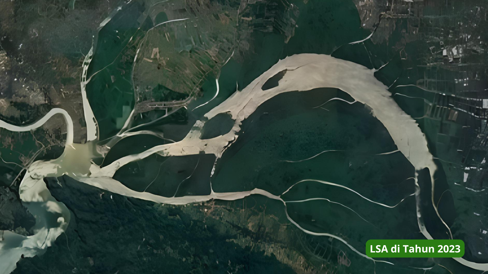
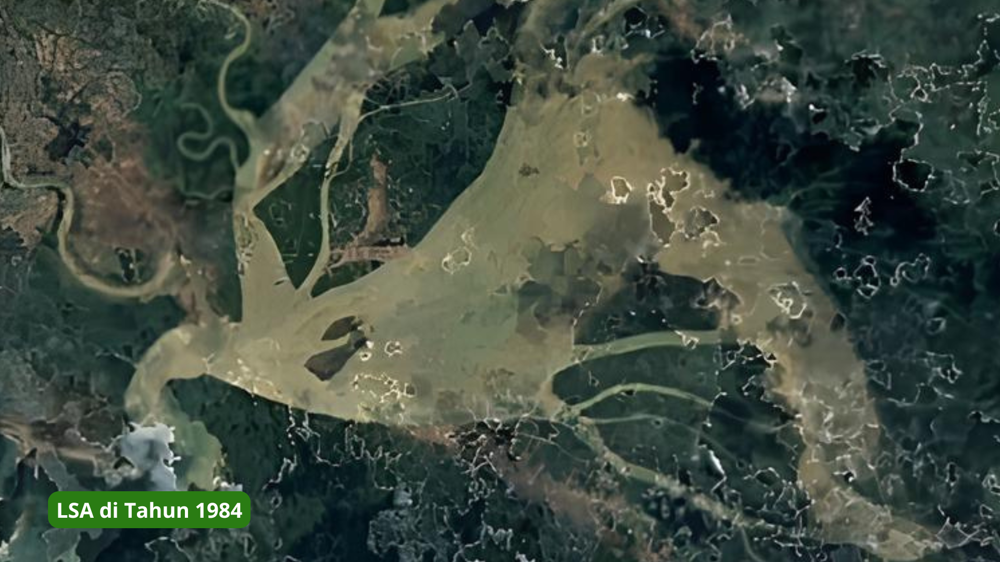
Sumber citra: Google Earth
Luas Perairan LSA (1984)
Luas Perairan LSA (2023)
Sedimen Masuk per Tahun
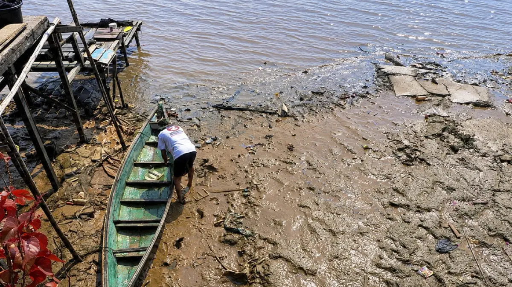
Sedimentasi terus menggerus perairan Segara Anakan, memicu pendangkalan dan penyusutan yang mengancam keseimbangan ekosistem pesisir.
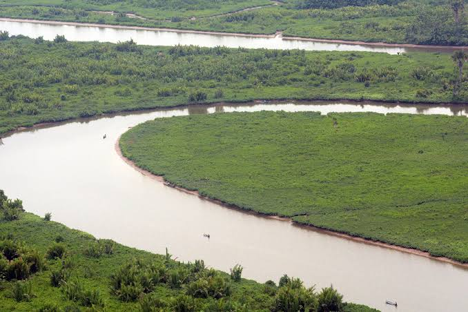
Perubahan lingkungan pesisir dapat menghilangkan habitat biota dan melemahkan fungsi mangrove sebagai pelindung alami pantai.
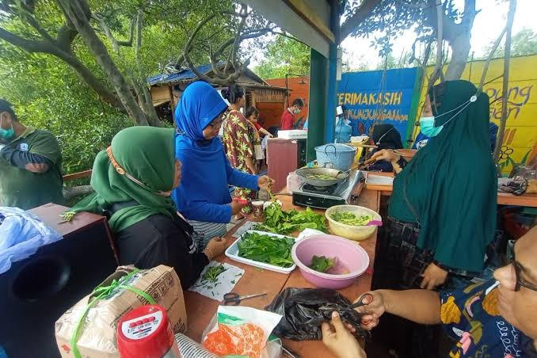
Potensi mangrove Kampung Laut menyimpan peluang bagi alam dan masyarakat yang dapat dikembangkan melalui inovasi dan pemberdayaan berkelanjutan.
Pendekatan terpadu berbasis teknologi dan partisipasi aktif untuk menjawab tantangan pesisir Laguna Segara Anakan.
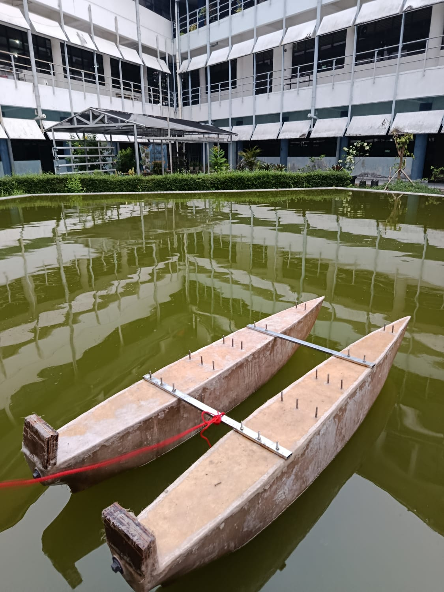
Klik untuk detail
Proyek ALBATROSS berfokus pada pengembangan 3 alat utama (ALBA, BAT, dan TROSS) untuk memantau parameter perairan di kawasan Kampung Laut. Data yang diperoleh akan divisualisasikan dalam bentuk peta untuk mendukung pemantauan dan konservasi ekosistem secara real-time.
Keunggulan: Dilengkapi dengan sensor presisi untuk mengukur kualitas air dan terintegrasi sistem transmisi data jarak jauh.
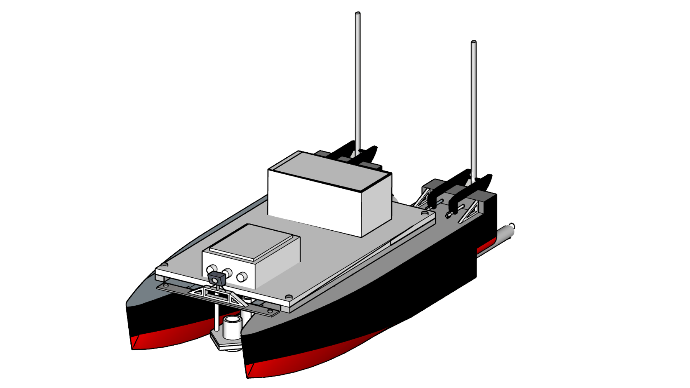
Keunggulan: Mampu memantau pergerakan arus secara akurat menggunakan teknologi pelampung pintar berdaya rendah.
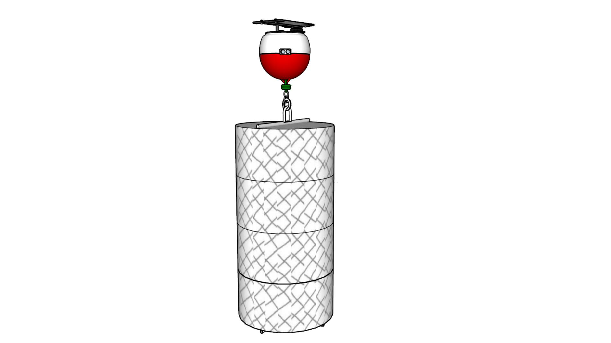
Keunggulan: Sistem deteksi tingkat sedimentasi secara otomatis dengan fitur peringatan dini berbasis IoT.
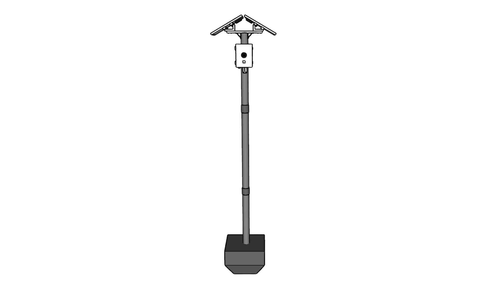
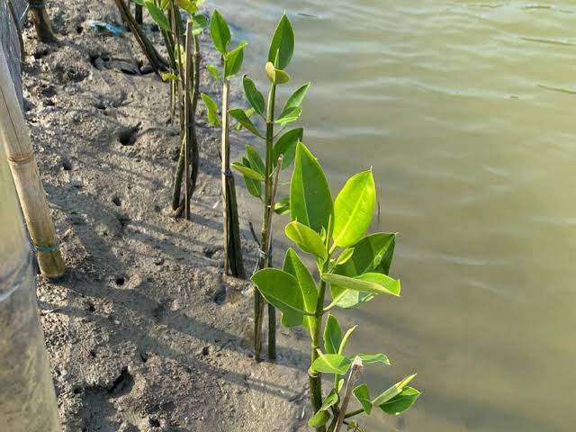
Klik untuk detail
Kegiatan penanaman mangrove bersama masyarakat Kampung Laut untuk menjaga kelestarian ekosistem pesisir dan habitat biota mangrove. Upaya ini turut mendukung pemulihan mangrove sebagai ekosistem karbon biru yang berperan dalam mitigasi perubahan iklim.
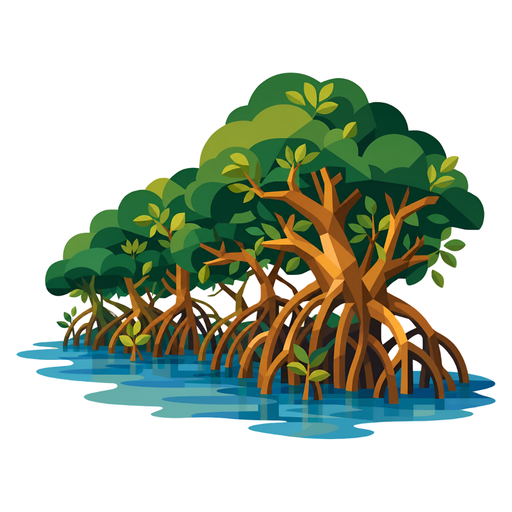
Mangrove memiliki potensi luar biasa untuk diolah menjadi berbagai produk bernilai ekonomi. Pengenalan dan penyebaran informasi mengenai hasil olahan tersebut diharapkan dapat meningkatkan wawasan masyarakat tentang potensi produk lokal serta mendukung pengembangannya agar lebih dikenal luas.
Beragam pemberitaan mengenai kondisi lingkungan, sedimentasi, dan kelestarian ekosistem mangrove di Segara Anakan.